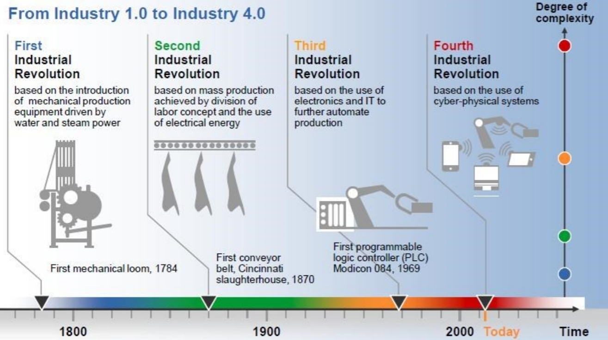
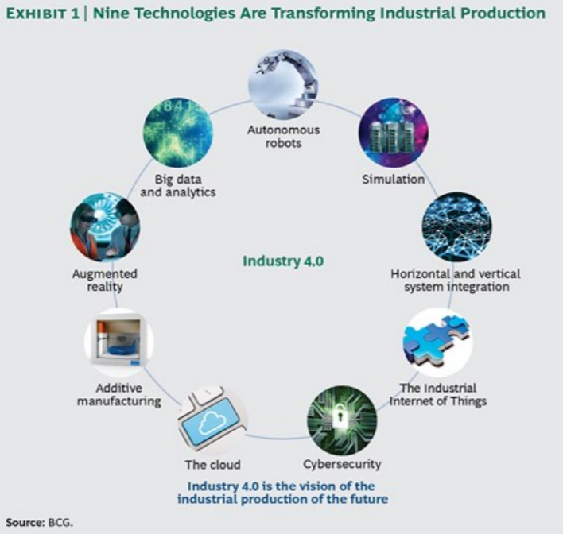
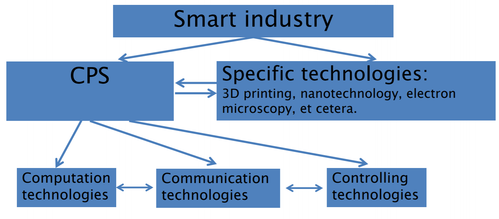

Het onderwerp: Exploring Smart Industry as technological innovation stond centraal bij de lezing: Rijksinstituut voor Ondernemend Nederland. Deze lezing werd gegeven door Koos Slagter, Senior lecturer/Researcher Saxion.
In deze lezing stonden 4 onderwerpen centraal:
Industrie 4.0, oftewel Smart Industry, als nieuwe context in onze samenleving
Cyber Physical Systems, dit is een mechanisme (meestal robot) dat wordt bestuurd / gemonitord door computer gebaseerde algoritmen, nauw geïntegreerd met het internet en haar gebruikers. En dan hiervan de essentie voor Industrie 4.0
Cyber Physical Systems vanuit een technologisch perspectief
Hoe je als bedrijf moet omgaan met de opkomst van Cyber Physical System innovaties
Een kort inzicht in de 4 verschillende industriële revoluties (bron Saxion, 2018)

Het blijkt dat Smart Industry de 4e industriële revolutie is, wat gebaseerd is op het gebruik van Cyber Physical Systems, maar wat is het nu precies en wanneer valt jouw bedrijf onder Smart Industry? In zijn algemeenheid wordt het volgende aangehouden:
Smart Industry bedrijven zijn industrieën/bedrijven met een hoge mate van flexibiliteit in productie, in termen van:
De productbehoeften, in termen van productspecificaties, productkwaliteit en productdesign
Productvolume. Waarbij de kernvraag is: Wat is wanneer nodig?
Asset en grondstoffen efficiency en kosten
In staat zijn om te finetunen op de behoeften van de klant, en door gebruik te maken van de gehele supply chain voor een optimale waardecreatie
Dit alles wordt mogelijk door een netwerk centrische benadering, wat slim gebruik maakt van de waarde die informatie heeft. Dit wordt vervolgens gedreven door slimme ICT toepassing en de nieuwste bewezen productietechnieken.

In onderstaande afbeelding is de link met CPS en Smart Industry en verschillende technologieën te zien.

CPS (Cyber Physical Systems) heeft een sterke verbinden met, de tegenwoordige populaire, termen Internet of Things, Machine to Machine, Internet of Everything, T-sensors (biljoenen sensors), ‘the fog’ en Industry 4.0
Al deze termen zijn gebaseerd op een visie van technologieën die de mensheid diep verbinden tussen de fysieke wereld en de digitale wereld. Het richt zich hierbij op fundamentele intellectuele problemen van het samenvloeien van onze engineering tradities van de ‘Cyber en physical’ werelden.
Er ontstaat een nieuwe engineering benadering, welke de benaming Smart Product Engineering, ofwel SPE, heeft gekregen. Dit beschrijft processen, methoden en tools voor de creatie van smart producten gebaseerd op interdisciplinaire methoden, concepten en ICT middelen. Het wordt essentieel dat de interactie tussen medewerkers en haar klanten, maar ook alle deelnemers, in de steeds nauwer samenwerkende, supply chain toeneemt in het productontwikkelingsproces.